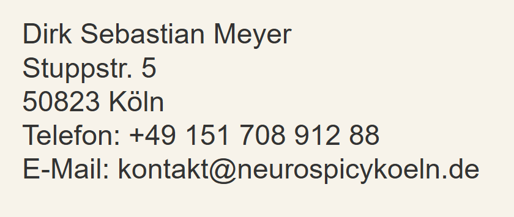

Unser Hoster erhebt in sog. Logfiles folgende Daten, die Ihr Browser übermittelt:
IP-Adresse, die Adresse der vorher besuchten Website (Referer Anfrage-Header), Datum und Uhrzeit der Anfrage, Zeitzonendifferenz zur Greenwich Mean Time, Inhalt der Anforderung, HTTP-Statuscode, übertragene Datenmenge, Website, von der die Anforderung kommt und Informationen zu Browser und Betriebssystem.
Das ist erforderlich, um unsere Website anzuzeigen und die Stabilität und Sicherheit zu gewährleisten. Dies entspricht unserem berechtigten Interesse im Sinne des Art. 6 Abs. 1 S. 1 lit. f DSGVO.
Es erfolgt kein Tracking und wir haben auf diese Daten keinen direkten Zugriff.
Wir setzen für die Zurverfügungstellung unserer Website folgenden Hoster ein:
GitHub Inc.
88 Colin P Kelly Jr St
San Francisco, CA 94107
United States
Dieser ist Empfänger Ihrer personenbezogenen Daten. Dies entspricht unserem berechtigten Interesse im Sinne des Art. 6 Abs. 1 S. 1 lit. f DSGVO, selbst keinen Server in unseren Räumlichkeiten vorhalten zu müssen. Serverstandort ist USA.
Weitere Informationen zu Widerspruchs- und Beseitigungsmöglichkeiten gegenüber GitHub finden Sie unter: https://docs.github.com/en/free-pro-team@latest/github/site-policy/github-privacy-statement#github-pages
Sie haben das Recht der Verarbeitung zu widersprechen. Ob der Widerspruch erfolgreich ist, ist im Rahmen einer Interessenabwägung zu ermitteln.
Die Daten werden gelöscht, sobald der Zweck der Verarbeitung entfällt.
Die Verarbeitung der unter diesem Abschnitt angegebenen Daten ist weder gesetzlich noch vertraglich vorgeschrieben. Die Funktionsfähigkeit der Website ist ohne die Verarbeitung nicht gewährleistet.
GitHub hat Compliance-Maßnahmen für internationale Datenübermittlungen umgesetzt. Diese gelten für alle weltweiten Aktivitäten, bei denen GitHub personenbezogene Daten von natürlichen Personen in der EU verarbeitet. Diese Maßnahmen basieren auf den EU-Standardvertragsklauseln (SCCs). Weitere Informationen finden Sie unter: https://docs.github.com/en/free-pro-team@latest/github/site-policy/github-data-protection-addendum#attachment-1–the-standard-contractual-clauses-processors
Grundsätzlich ist ein Auftragsverarbeitungsvertrag mit dem Hoster abzuschließen.
Das bayerische Landesamt für Datenschutzaufsicht hat für das Hosting rein statischer Websites eine Ausnahme gemacht.
Für den Fall, dass die Webseite der Selbstdarstellung dient, z.B. von Vereinen oder Kleinunternehmen, keine personenbezogenen Daten an den Betreiber fließen und kein Tracking stattfindet, liegt keine Auftragsverarbeitung vor.
Weiter heißt es: „Die Tatsache, dass auch beim Hosting von statischen Webseiten zwangsläufig IP-Adressen, d.h. personenbezogene Daten, verarbeitet werden müssen, führt nicht zur Annahme einer Auftragsverarbeitung.
Das wäre nicht sachgerecht. Die (kurzfristige) IP-Adressenspeicherung ist vielmehr noch der TK-Zugangsvermittlung des Website-Hosters nach dem TKG zuzurechnen und dient in erster Linie Sicherheitszwecken des Hosters.“
(https://www.lda.bayern.de/media/veroeffentlichungen/FAQ_Hosting_keine_Auftragsverarbeitung.pdf)
Wir gehen davon aus, dass diese Ausnahme auf GitHub Pages anzuwenden ist.
Die Pflege dieser Webseite erfolgt durch die oben benannte Person oder deren Vertretung, nach bestem Wissen und Gewissen.
Wir können jedoch keine Gewähr für Aktualität, Richtigkeit oder Vollständigkeit übernehmen.
Sollten uns Ihrer Ansicht nach grobe Fehler unterlaufen sein, senden Sie uns bitte eine Benachrichtigung.
Wir werden den Sachverhalt prüfen und gegebenenfalls schnellstmöglich für Veränderung sorgen.
Von dieser Webseite aus wird auf andere Webseiten verwiesen.
Für die Inhalte externer Webseiten sind deren Betreiber*innen verantwortlich.
Zum Zeitpunkt der Linksetzung waren auf den verlinkten Webseiten keine illegalen Inhalte erkennbar.
Eine ständige Kontrolle externer Webseiten ist nicht zumutbar.
Bei Kenntnis von rechtlichen Verstößen werden die Links jedoch unverzüglich entfernt.